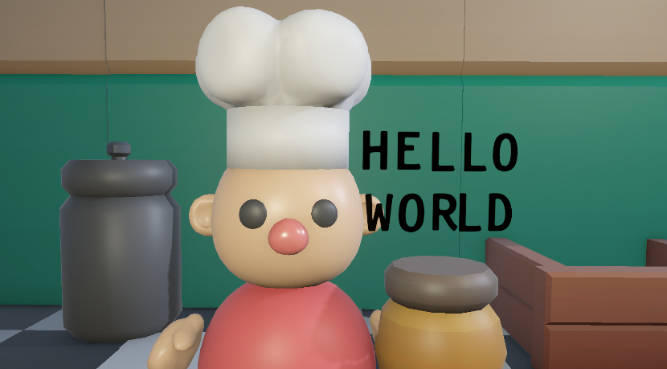

Final degree projectSelected work
My final degree project, plus four more — game jams, a 40-person team, and one built from scratch.
More work


About
I started with Scratch as a kid and never lost the habit of turning an idea into something playable.
Now I am graduated in Video Game Design and Development at CITM (UPC), working across the technical and creative sides of making games.
What I enjoy lives between the two — deciding how a system should behave, then making it feel good to play. Game jams are where I push hardest: tight deadlines, real constraints, a finished product at the end.
Toolkit
- Programming
- Unity · C++ · C#
- Art & Design
- Maya · Substance · Blender
- Production
- Git · Trello